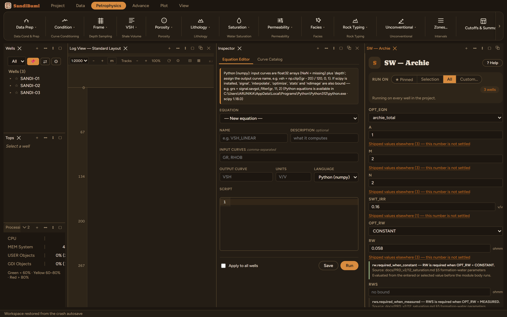

This pane is Archie's equation twice over, and the choice between the two is the first decision: archie_total solves on total porosity and backs the effective saturation out through the bound-water fraction; archie_effective solves on effective porosity directly. On shaly rock the two differ materially, which is why the identity is a named choice and never inferred. This run uses archie_total, the default.
Nothing in this pane carries a default: a, m, n, Rw and the irreducible floor are basin statements. The picks, exactly as recorded in the run's reference field:

On these wells: 0 clean · 3 degraded — and the degradation report is the
method talking. The dominant clamp, [0.16, 1] at 372 samples per well, is
Archie computing more than 100% water through the shale and the wet sand (at
RT 2.5 ohm·m and low porosity the arithmetic exceeds 1) and being held at the
bounds. In the gas sand the unlimited SWT_ARCH reads a median 0.084 —
under 10% water at 120 ohm·m. The limited SWT/SWE pair
carries the floor and ceiling; the unlimited twins show what was clipped.
One habit to keep: the two Archie identities disagree by whole saturation units on
shaly rock, so a report that says "Archie" without naming which one is not
reproducible. The output SW_METHOD curve records the identity per run for
exactly that reason.